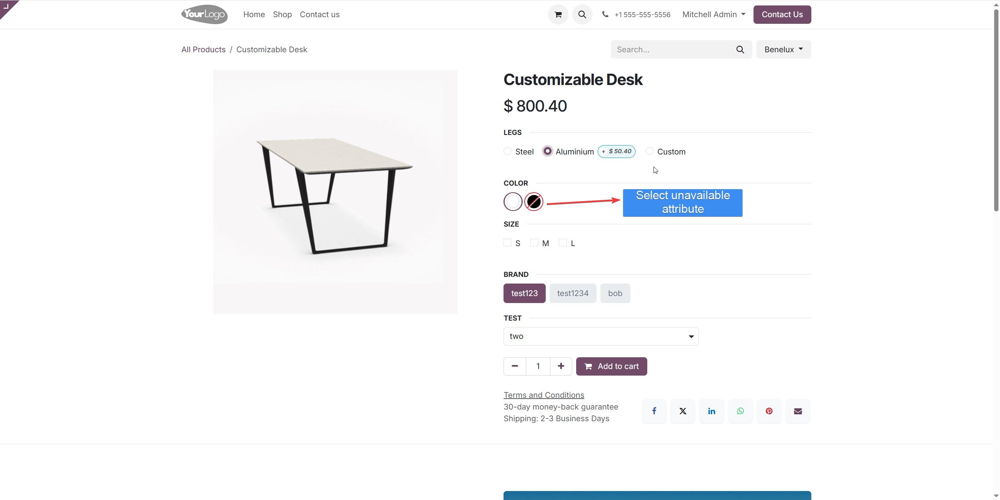
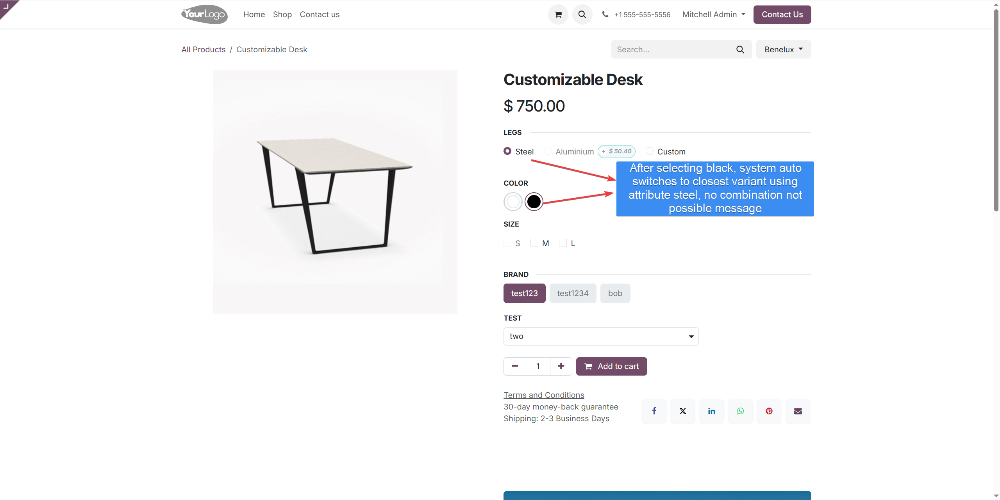
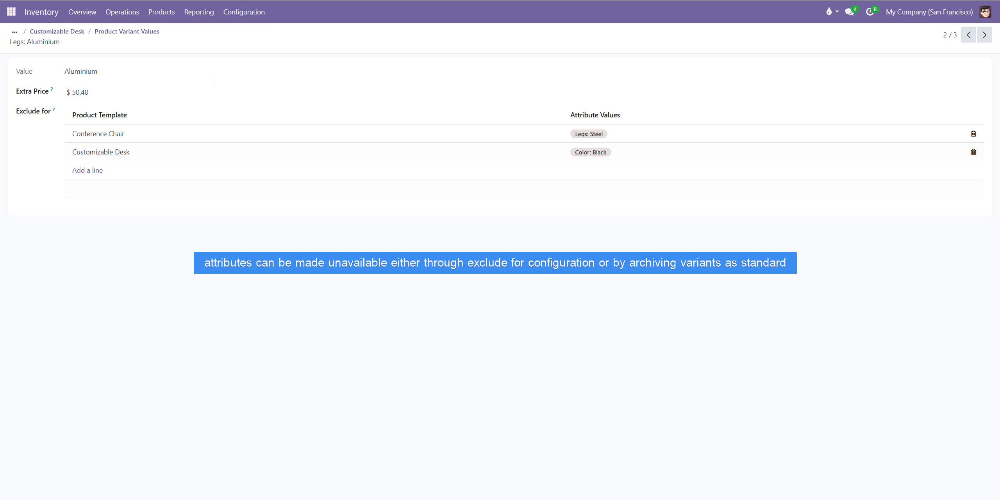
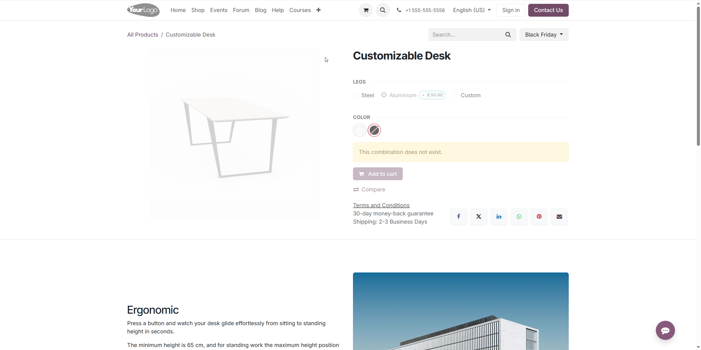

This module enhances the product variant selection experience in your Odoo eCommerce store by automatically switching to valid product combinations instead of showing frustrating "This combination does not exist" error messages.
Similar to how major eCommerce platforms like Amazon handle variant selection, this module intelligently guides customers to available product combinations, reducing cart abandonment and improving conversion rates.
When a customer selects an invalid combination of product attributes, the module automatically switches to the closest valid combination that matches their intent.
Works seamlessly with Odoo's built-in visual indicators that show unavailable options, automatically switching to valid alternatives when customers select them anyway.
The automatic switching algorithm prioritizes customer preferences by choosing the closest matching valid variant based on their selections.
Works seamlessly with all Odoo themes without requiring custom styling. The module integrates naturally with your existing website design.

In this example, the customer has selected "Aluminium" for the Legs attribute. Notice how the "Black" option is crossed out, indicating it's not available with the current selections. This behavior is part of Odoo out of the box, using either the "Exclude for" setting or archived variant configurations.

When the customer clicks the "Black" color attribute, instead of showing a "This combination does not exist" error, the module automatically switches to the closest valid variant that includes Black. The algorithm favors keeping as many of the current selections as possible. In this case, the "Aluminium" option is automatically switched to "Steel" while Black is preserved.

Works with standard out-of-the-box Odoo product configurations. Use the "Exclude for" setting or archive variants to disable certain attribute combinations.

Limitations: Automatic switching works for all variant types, but cannot help when selecting an attribute value in the following circumstances:
Customers are less likely to leave when they don't encounter confusing error messages.
Smooth, intuitive variant selection similar to major eCommerce platforms.
Making it easier for customers to find valid products increases sales.
Your store behaves like established eCommerce platforms customers trust.
Works automatically after installation with your existing product variants.
Only affects interactive product pages, not orders or historical data.
Intercepts variant combination requests and intelligently determines the closest valid combination
Automatically updates the user interface to reflect the valid combination selected by the backend
Preserves as many of the customer's original selections as possible when finding a valid alternative
Works with Odoo's built-in exclusion styling to provide a smooth experience without requiring custom CSS
Install this module to provide your customers with a smoother, more professional product selection experience that matches the best eCommerce platforms.